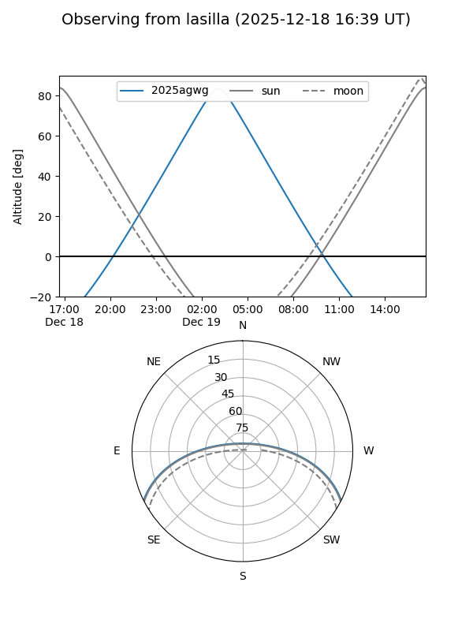
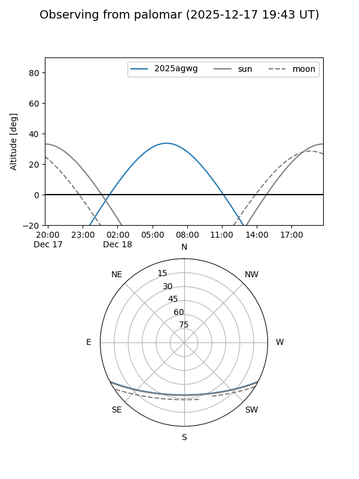
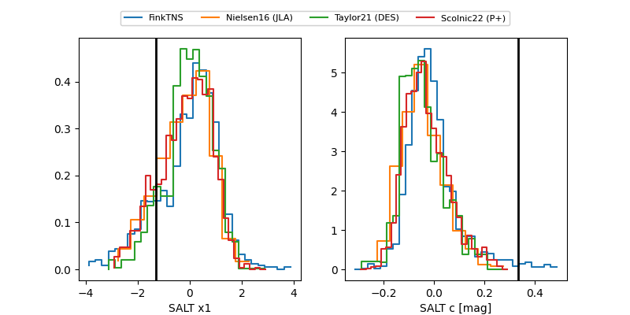

2025agwg
Target 2025agwg at 2025-12-19 06:24
Aliases and brokers:
FINK: fink-portal.org/ZTF25acgxftn
Lasair: lasair-ztf.lsst.ac.uk/objects/ZTF25acgxftn
ALeRCE: alerce.online/object/ZTF25acgxftn
TNS: wis-tns.org/object/2025agwg
YSE: ziggy.ucolick.org/yse/transient_detail/2025agwg
alt names
ZTF25acgxftn (ztf,fink_ztf)
2025agwg (tns,yse)
PS25iol (panstarrs)
Coordinates:
equatorial (ra, dec) = 63.2874,-22.97461
equatorial (HMS+DMS) = 04:13:08.97,-22:58:28.58
galactic (l, b) = (219.3588,-44.42492)
Flags:
Photometry:
last ztfr=19.75
3 ztfr detections
Lightcurve

Visibility


Additional plots
